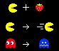

No distinction between methods and fields
Not “instances” of a “class”
Just a bag, or dictionary
var an_object = {
fruta: "frambuesa",
a_number: 2,
square: function(x) {
return x * x;
},
another_object: {
x: 3,
y: 12,
},
}var o = { x: 2 };
o.x = 12;
o.y = function() { return 5; };
delete o.x;
o.x; // undefined
o.y; // [Function]Unknown properties return undefined
var A = {
x: 2,
square: function() {
return this.x * this.x;
}
}
A.square(); // 4this binds to A
this, needs to be explicitthis binds to A, the receiver
+-----------------+
| +-----------+ |
+----+ | | bindings | |
|this|----------->| +-----------+ |
+----+ | |
| function |
| |
+------------+ | +--------+ | +-------+
| arguments |--->| | body | |-->|return |
+------------+ | +--------+ | |value |
+-----------------+ +-------+
this is bound at call-time to the receiver
this: extra hidden argumentvar A = {
x: 2,
square: function() {
return this.x * this.x;
}
}
var B = { x: 10 };
B.square = A.square;
B.square(); // 100B is the receiver, so this is bound to B
var hare = { x: 0, speed: 2,
step: function() {
this.x += this.speed;
}
};
var turtle = { x: 0, speed: 1,
step: function() {
this.x += this.speed;
}
};step?var hare = { x: 0, speed: 2,
step: function() {
this.x += this.speed;
}
};
var turtle = { x: 0, speed: 1,
step: hare.step
}
hare.step(); hare.x; // 2
turtle.step(); turtle.x; // 1var hare = {
step: ..., run: ...
sleep: ..., eat: ...
...
}
var turtle = {
step: hare.step, run: hare.run,
sleep: hare.sleep, eat: hare.eat,
...
}var hare = { x: 0, speed: 2,
step: function() {
this.x += this.speed;
}
}
var turtle = {
__proto__: hare, x: 0, speed: 1
}
turtle.step();
turtle.x; // 1Object.createTo assign the prototype at creation time,
var turtle = Object.create(hare);
turtle.x = 0;
turtle.speed = 1;is equivalent to,
var turtle = {
__proto__: hare,
x: 0,
speed: 1,
};+--------+ __proto__ +--------+ __proto__
| B |----------->| A |----------->null
| y: 3 | | x: 2 |
+--------+ | y: 5 |
+--------+B.x; // 2
B.y; // 3
B.z; // undefinedProperties are looked up along the prototype chain
The chain should not contain cycles
var point1d = {
x: 0,
move: function(dx) {
point1d.x += dx;
},
};
point1d.move(1);
point1d.x; // 1This is great for singleton objects
var duck1 = {
size: 12, swim: function() { ... }
}
var duck2 = {
size: 2, swim: function() { ... }
}
var duck3 = {
size: 5, swim: function() { ... }
}There is no generic cloning facility in JavaScript
So you cannot do,
var duck2 = Object.clone(duck1);
var duck3 = Object.clone(duck1);Contrarily to other prototypes languages like Self
Nothing prevents us from rolling our own
function duckMaker(size) {
return {
size: size,
swim: function() { ... }
};
}
var donald = duckMaker(12);
var scrooge = duckMaker(2);
var louie = duckMaker(5);This is wasteful,
var donald = duckMaker(12);
var scrooge = duckMaker(2);
donald.swim === scrooge.swim; // falseAdditionally, cannot update methods for all objects at once
var protoDuck = { swim: function() { /* */ } };
function duckMaker(size) {
return { __proto__: protoDuck, size: size };
}
var donald = duckMaker(12);
var scrooge = duckMaker(2);
donald.swim === scrooge.swim; // true
protoDuck.eat = function() { this.size += 1; }
donald.eat(); donald.size; // 13
scrooge.eat(); scrooge.size; // 3function createObject(proto, properties) {
properties.__proto__ = proto;
return properties;
}
function duckMaker(size) {
return createObject(protoDuck, {
size: size
});
}
var donald = duckMaker(12);equivalent to,
var donald = createObject(protoDuck, {size: 12});function Duck(size) {
this.size = size;
}
Duck.prototype.swim = function(){...};
Duck.prototype.eat = function(){...};
var donald = new Duck(12);new creates an empty object, binds it to this, and assigns its __proto__ to Duck.prototype
new creates empty objectthisvar duck = {
new: function(size) {
return {
__proto__: this,
size: size,
};
},
eat: function() { this.size += 1; },
};
var donald = duck.new(12);
var scrooge = donald.new(5);__proto__ is just another property
It can be changed dynamically
But you should use Object.setPrototypeOf and Object.getPrototypeOf rather than __proto__ directly
It’s also not recommended for performance
var duck = {
swim: function() { ... }
}
var witch = {
burn: function() { ... }
}
var donald = { __proto__: duck };
donald.swim();
donald.__proto__ = witch;
donald.burn();
var pacman = {
x: 0, speed: 1,
hasEatenFruit: false,
move: function() { this.x += this.speed; },
collideWithGhost: function() {
if (this.hasEatenFruit) ghost.die();
else this.die();
},
eatFruit: function() {
this.hasEatenFruit = true;
this.speed = 2;
ghost.flee = true;
}
}
var ghost = {
move: function() {
if (this.flee)
fleePacman();
else
huntPacman();
}
}var protoPacman = {
speed: 1,
move: function() { this.x += this.speed; },
collideWithGhost: function() { this.die(); },
eatFruit: function() {
this.__proto__ = superPacman;
ghost.__proto__ = fleeingGhost; } }
var pacman = { __proto__: protoPacman, x: 0 };
var superPacman = {
__proto__: protoPacman,
speed: 2,
collideWithGhost: function() { ghost.die(); } }<ul>
<li>One object per state</li>
<li>State pattern by inheritance instead of composition</li>
</ul>
var protoGhost = {
move: function() { huntPacman(); }
}
var ghost = {
__proto__: protoGhost
}
var fleeingGhost = {
move: function() { fleePacman(); }
}this for delegationObjects literals have Object.prototype as their __proto__
var o = {};
o.toString(); // "{}"
Object.prototype.x = 12;
o.x; // 12Modifying Object.prototype adds properties to all objects
Function.prototypevar f = function() { return 2; }
f.call; // [Function]
f.call(); // 2var x = 12;
this.x; // 12The top level is another object
function f() { return this.x; }
f(); // 12this binds to it for calls without an explicit receiver
var A = {
x: 2,
square: function() {
return this.x * this.x;
}
}
var square = A.square;
square(); // undefined
this.x = 8;
square(); // 64this to a functionYou can override the value of this with call and apply
var A = {
x: 2,
square: function() {
return this.x * this.x;
}
}
var square = A.square;
square.call(A); // 4
square.call({x:12}); // 144this to an objectYou can also bind this to a specific object
var A = {
x: 2,
square: function() {
return this.x * this.x;
}
}
var square = A.square.bind(A);
square(); // 4
square.call({x:42}); // 4And that leads to...
var bind = Function.prototype
.call.bind(Function.prototype.bind);
bind({x:12}, square)(); // 144
bind({x:8}, square)(); // 64
// bind(Obj, func) <=> func.bind(Obj)